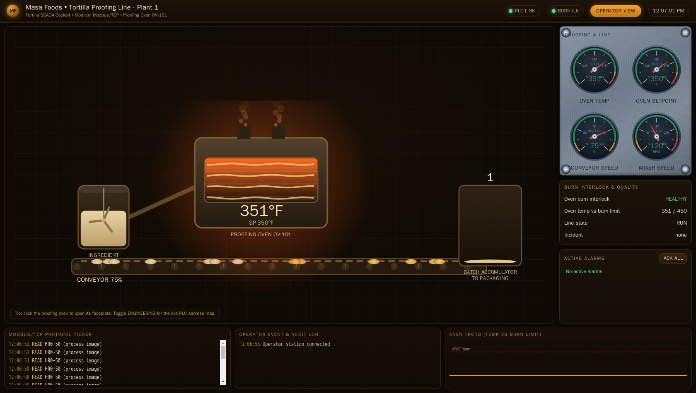
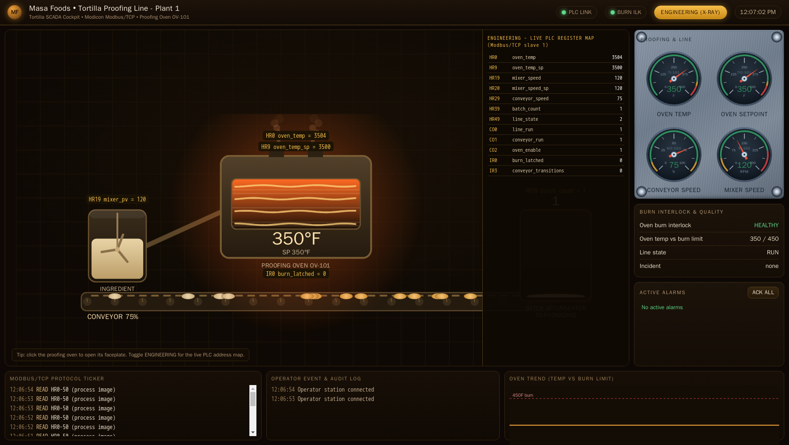
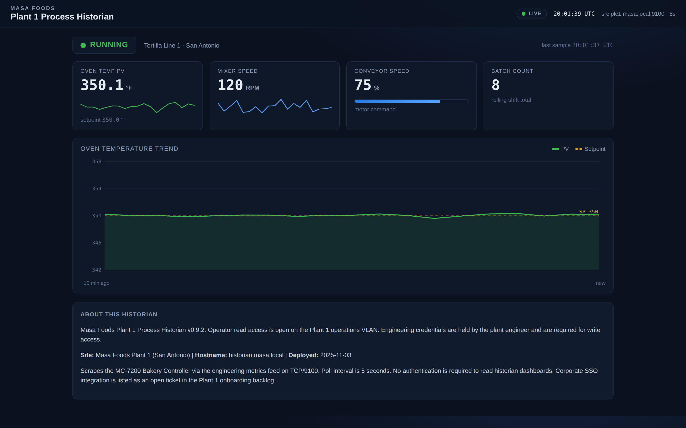

Exercise ICSPT-3.3: The Overcooked Tortilla
Engagement Status
| Client | Masa Foods, Inc. (fictional) |
|---|---|
| Role | OT Security Engineer, Plant 1 |
| Phase | Discovery Enumeration Exploitation Reporting |
What you know so far: You can read any register, build Modbus requests by hand, and reconstruct a register map from observation. The next step is a controlled, reversible write attack that proves a measurable process impact to executive leadership.
Environment Checklist
Every ICSPT exercise assumes you read the Before-You-Begin section in Exercise 1.1 (Touring Masa Foods) first. If you have not, open that page now: it explains the two attacker-host options (your own Kali over VPN, or the browser-mounted RangeBox) and walks you through the one-time /etc/hosts setup that lets you call every Plant 1 target by its friendly name.
Exercise 3.3 introduces one new host: the Plant 1 operator cockpit at ophmi-tortilla.masa.local (HTTP, port 80), which was not in your /etc/hosts from earlier exercises. Add it now using the ophmi-tortilla IP shown in the Exercise Network panel on the OCR track page:
Kali (one-time for Exercise 3.3)
Exercise 3.3 is the first write-attack exercise. Before you write anything to the PLC, confirm name resolution and prove that plc1.masa.local, historian.masa.local, and the operator cockpit are all reachable.
Kali
Expected: two name-to-IP lines, two successful pings, succeeded! on TCP/502, and HTTP 200 from the historian. If getent returns nothing, re-run the /etc/hosts block from Exercise 1.1. If the TCP probes fail, fix connectivity first: writes against an unreachable PLC fail silently and will waste your maintenance window.
Scenario
Reyna Alvarado has signed off on a demonstration during a scheduled maintenance window. Executive leadership is skeptical that "Modbus has no authentication" actually matters. Reyna wants them to see the oven temperature climb on the historian, the burn interlock trip on the HMI, and the incident marker appear in the MC-7200 memory map, all from a single unauthenticated write.
Why this matters
Budget for OT security moves on concrete demonstrations, not abstract warnings. Pen testers have spent twenty years telling executives "Modbus has no authentication" and watching eyes glaze over. The phrase is technically correct and persuasively useless. The same executive who cannot get through the first half of a segmentation proposal will approve a line item the moment they watch an oven temperature climb past the burn threshold on the historian while they stand in the control room.
The demonstration in this exercise is the pen tester's single most valuable deliverable. Three reasons: - Concrete impact beats abstract warning. Saying "a bad actor could overheat the oven" is abstract. Showing the oven overheat on the real historian is concrete. Every executive who watches the demo understands the risk without a translation layer. - It surfaces the safety-security overlap. Executives who think OT security is an IT problem learn in the first five seconds of the demo that a Modbus write can trip a safety interlock. Once that idea is in the room, the conversation shifts from "what is our cyber posture?" to "what is our safety posture when cyber fails?" and the budget line moves from IT to operations capex, which is a much bigger pool. - It creates a paper trail. Reyna gets a controller-planted incident marker that she can screenshot, timestamp, and attach to the quarterly risk report. Three months later when the risk committee asks "has anything changed?" she has evidence. Without the demo, she has one engineer's opinion.
Nothing physical will burn. The demo is reversible, instrumented, and safe. Your job is to execute it cleanly so Reyna can put the screenshots in front of the board.
Nothing physical will burn. The MC-7200 is running under a simulator harness with a first-order thermal response (time constant near 20 seconds) and a hard interlock that latches when oven_temp_pv crosses 450.0 degrees F. On trip, the controller plants an incident marker across a reserved block of holding registers and stamps a 16-bit sentinel constant into a single register higher in the map. Reading and decoding those registers is your job, not something the workbook hands you.
Your tasks in order:
- Baseline the oven temperature on the historian
- Write a new oven setpoint well above the burn threshold
- Watch the historian and HMI react
- Read and decode the incident marker from the MC-7200
- Restore the safe baseline setpoint
The flag is the incident marker you decode off the wire.
| Credentials in scope | Username | Password | Where it is used |
|---|---|---|---|
| Operator HMI | plant_op |
masa_op_2025 |
Read-only HMI dashboard reference |
The operator cockpit
Plant 1 runs a live operator cockpit for the tortilla proofing line. Open it in a browser at the address shown for ophmi-tortilla in the Exercise Network panel (HTTP, port 80). The cockpit shows the proofing-oven temperature, the mixer and conveyor gauges, the conveyor belt animation, and the line alarm state in real time, so you can watch the oven temperature climb and the burn interlock trip as you run each step.

Flip the cockpit into its Engineering view and every element is labelled with the live Modbus register behind it, so the proofing oven reads its holding-register address straight off the HMI. The same register map you are about to write by hand sits one click away on the operator console.

Objectives
- Establish a baseline of the oven temperature on the historian dashboard
- Write a setpoint above the burn threshold to register
40010 - Observe the burn interlock trip on the HMI and historian
- Read and decode the incident marker planted at registers
40980through40995 - Restore the oven setpoint to the safe baseline value
| Detail | Value |
|---|---|
| Difficulty | Intermediate |
| Estimated Time | 45 to 60 minutes |
| Prerequisites | Exercises 3.1 and 3.2 |
| Flag | Source | Found? |
|---|---|---|
OCR{<hexmarker>_<burn_state>} |
Hex sentinel at 40999 plus the ASCII marker decoded from 40980-40995 |
Background: Process Impact Through a Single Register Write
Unlike the read exercises, a write attack changes the physical state of the process, or in this training environment, the simulated physical state. The pattern is the same three steps every time:
- Pick a target register: pick a register whose value has a direct physical meaning
- Write a value outside the normal range: push the PLC into a state the operators rarely (or never) see
- Observe the consequence: on the HMI, on the historian, or on the physical equipment
The MC-7200 on the Plant 1 tortilla line uses holding register 40010 for the oven setpoint, scaled in tenths of a degree Fahrenheit. A normal setpoint is 3500 (350.0 deg F). A malicious write of 9000 (900.0 deg F) tells the oven to heat as hard as it can. The thermal time constant ensures the temperature climbs over a handful of seconds rather than instantly, which is exactly what you want executives to see.
Reversibility is the rule
Every write attack in this exercise is reversible. You write 9000, observe the trip, then write 3500 back. In real assessments you never leave a PLC in an abnormal state at the end of a test window. Reyna's sign-off is explicit: "reset the oven to 350 before you clock out."
The Burn Interlock
The MC-7200 models a safety interlock that latches when oven_temp_pv >= 450.0 deg F. On latch:
line_statetransitions from2(RUN) to3(ALARM)oven_enableis cleared- The controller writes an ASCII incident marker into the reserved block
40980through40995 - The controller writes a 16-bit sentinel constant into register
40999
Once latched, the marker stays until the lab resets. You do not need to clear it. What the marker spells and what the sentinel constant is are the two halves of the flag, and you recover both by reading the registers after the trip, not from this page.
Tools You Will Need
| Tool | Purpose | Check |
|---|---|---|
mbpoll |
Modbus/TCP command-line client: read and write holding registers with no code | which mbpoll |
Wireshark / tshark |
Confirm the write request and its function code on the wire | wireshark --version |
| Web browser | Historian dashboard (port 3000) and operator cockpit (port 80) | Firefox or Chromium |
curl |
Command-line historian polling | curl --version |
jq |
JSON parsing (optional) | jq --version |
Walkthrough
Step 1: Baseline the Historian
Open http://historian.masa.local:3000/ in a browser tab and leave it visible. Capture the current oven PV and SP values from the dashboard tiles.

Expected output
{
"oven_temp_pv": 350.12,
"oven_temp_sp": 350.0,
"mixer_speed_pv": 120.3,
"mixer_speed_sp": 120.0,
"conveyor_speed": 75,
"batch_count": 18,
"line_state": 2,
"burn_latched": 0,
"ts": "2026-04-01T14:00:12Z"
}
oven_temp_pv and line_state. You will compare against these values after the write.
Step 2: Verify the Current Setpoint on the PLC
The documented register, the wire address, and what mbpoll wants. The MC-7200 publishes the oven setpoint at documented holding register 40010, scaled in tenths of a degree Fahrenheit. Holding registers are documented in the 4xxxx range; on the wire the address is zero-based and drops the leading 4, so documented register 40010 is wire address 9. The mbpoll tool hides that arithmetic: its -r option takes the register number without the leading 4, so -r 10 reads documented register 40010. There is no client to write; one read confirms the live value before you touch it.
Kali
-1 polls once and exits, -a 1 is the Modbus unit id, -t 4 selects holding registers (Function Code 3), -r 10 is documented register 40010, and -c 1 reads a single register. Port 502 is the default. A reading of 3500 is 350.0 deg F, the safe baseline.
Expected output
Divide by ten to read the value in degrees. A baseline of3500 decodes to 350.0 deg F.
Step 3: Write a Malicious Setpoint
Write 9000 (900.0 deg F) to register 40010. The MC-7200 accepts the write without any authentication challenge.
One command writes the register. When mbpoll is given a value after the address, it writes instead of reads. For a holding register that means a Modbus Write Single Register (Function Code 6) request. The same -r 10 that read documented register 40010 in Step 2 now targets it for the write; appending 9000 tells the controller to drive the oven to 900.0 deg F.
Kali
-1 sends one transaction and exits, -a 1 is the unit id, -t 4 is the holding-register table, -r 10 is documented register 40010, and the trailing 9000 is the value to write. Re-run the Step 2 read to confirm the register now holds 9000.
Expected output
Re-runningmbpoll -1 -a 1 -t 4 -r 10 -c 1 plc1.masa.local now returns 9000, which is 900.0 deg F. The controller took the new setpoint with no challenge.
The PLC did not challenge the write
Modbus function code 6 (Write Single Register) is unauthenticated. Any host on the operations VLAN that can reach TCP/502 can issue this request. Record the time of the write in your engagement log.
Confirm the write on the wire. mbpoll is the fast path; Wireshark is how you prove which function code crossed the network, which is exactly what a Modbus-aware IDS keys on. Start a capture on TCP port 502 before you run the write, or run tshark -i any -f 'tcp port 502' -Y modbus in a second terminal, then set the Wireshark display filter to modbus and select the request you sent. Wireshark decodes the Modbus layer and shows the function code, the reference number, and the value written. The request decodes to Function Code 6 (Write Single Register) with a Reference Number of 9, the zero-based wire form of documented register 40010, and the register value carried in the payload. Reading the exchange this way, rather than trusting the tool, is the core OT analyst skill and the signature you turn into a detection rule. A Write Multiple Registers attack would show Function Code 16 instead.
Step 4: Watch the Historian React
Switch to the historian browser tab. Within about five seconds, the Oven Temp (PV) tile starts climbing and the embedded chart tilts upward. At roughly four to five seconds past the write, the tile crosses 450 and the Line State tile flips from RUNNING to ALARM in red.
Kali (optional live poll)
Expected output
2026-04-01T14:02:12Z pv=355.4 state=2 burn=0
2026-04-01T14:02:13Z pv=380.1 state=2 burn=0
2026-04-01T14:02:14Z pv=410.8 state=2 burn=0
2026-04-01T14:02:15Z pv=436.2 state=1 burn=0
2026-04-01T14:02:16Z pv=452.1 state=3 burn=1
2026-04-01T14:02:17Z pv=460.4 state=3 burn=1
burn_latched flag goes to 1 on the frame where the PV crosses 450, and the line state transitions to 3 (ALARM) on the same frame.

Step 5: Read and Decode the Incident Marker
Once burn_latched is 1, pull the reserved block the controller stamped on trip. The block runs documented registers 40980 through 40995, which is wire address 979 for 16 registers, so mbpoll reads it with -r 980 -c 16.
Kali
-r 980 is documented register 40980 and -c 16 covers the block through 40995. mbpoll prints each register as a decimal integer, one per line, labelled by register number.
Decode the block to ASCII yourself. Each holding register is 16 bits, which is two bytes, which is two ASCII characters with the high byte first (the Modbus big-endian convention). Take each decimal value mbpoll printed, convert it to hex, and read the two bytes as characters: the high byte first, then the low byte. Strip any trailing null bytes (0x00). Concatenating those characters in register order spells the incident marker the controller planted. That decoded string is the body of your flag, and you read it the same way you decoded the commissioning certificate in the earlier exercises.
Read the sentinel constant the controller stamped on trip. The interlock also writes a single 16-bit constant into documented register 40999 (wire address 998, so -r 999 -c 1). Read it and convert the decimal value mbpoll returns into hexadecimal: the hex form is the marker Reyna treats as a burn sentinel, and it is the leading component of the flag.
Expected output
Convert the decimal value to hexadecimal (for example withprintf '%#x\n' <value>) to read the sentinel in the 0x form the flag uses. The decoded ASCII block from the first read and this hex sentinel together form the flag; the platform confirms the assembled string, so it is not printed here.
Step 6: Restore the Safe Setpoint
Always reset the setpoint before you close the exercise. Even though the burn interlock latches, the setpoint itself is still 9000, and leaving it there would be a bad operational habit.
Kali
The trailing3500 writes 350.0 deg F back to documented register 40010. Re-run the Step 2 read to confirm the setpoint is restored.
Expected output
A follow-upmbpoll -1 -a 1 -t 4 -r 10 -c 1 plc1.masa.local reads 3500 again, the safe baseline.
Clear the latched interlock by removing the hazard. While the burn is latched the line sits in ALARM (line_state, register 40050, reads 3). The MC-7200 holds that latch until the oven cools back below the 450 deg F trip point, which is the controller's way of refusing to restart while the hazard is still present. Once you have written the safe setpoint above, the oven cools on its own and the interlock releases, returning the line to RUN. Poll line_state until it reads 2:
Kali
# watch the oven cool and the interlock clear (Ctrl-C to stop)
mbpoll -a 1 -t 4 -r 50 -c 1 plc1.masa.local
line_state flips from 3 (ALARM) to 2 (RUN), the interlock has reset. With the setpoint at 3500 this takes roughly ten seconds.
To cool faster, hit the e-stop. The e-stop coil 00010 stops the line and drives the oven to ambient, which clears the interlock sooner. Assert it, wait for the oven to drop under the trip point, then release it:
Kali
mbpoll -1 -a 1 -t 0 -r 10 plc1.masa.local 1 # assert e-stop (cool to ambient)
# wait a few seconds for register 40001 to fall under 4500 (450.0 deg F)
mbpoll -1 -a 1 -t 0 -r 10 plc1.masa.local 0 # release e-stop
-t 0 selects the coil table and -r 10 is coil 00010 (mbpoll coil addressing is 1-based). The reset is driven by the oven cooling below the trip point, not by the write timing, so it does not matter how quickly you send these. Confirm with a read of 40050 (back to 2).
Step 7: Record and Submit
Fill in the log and submit the flag.
Incident log:
Timestamp Action PLC Reg Before After Read baseline setpoint 40010 Write malicious setpoint 40010 9000 Read incident marker block 40980-40995 Read burn sentinel 40999 Restore safe setpoint 40010 3500 Flag: assemble it from the hex sentinel you read at 40999 and the ASCII block you decoded from 40980-40995, then submit it in the OCR platform flag box. The platform confirms the result, so the finished string is not printed here.
Output Interpretation
- The time delta between the malicious write and the burn trip is roughly four to five seconds with the simulator's 20-second thermal constant and a setpoint of 900 deg F. Slower plants would give operators more time to react
burn_latchedis a boolean exposed in a read-only input register, so a client cannot clear it by writing a zero there. The controller releases the latch on its own once the oven cools back below the trip point, which is how a safety interlock refuses to restart a line while the hazard is still present- The sentinel constant at
40999is controller-generated, not an attacker value. Detection rules can look for any write to40999as a strong burn signal, and the specific constant the controller plants there tells an analyst which interlock latched - Restoring the safe setpoint is what clears the trip: the oven cools, drops below the trip point, and the interlock releases the line back to RUN. Hitting the e-stop just cools the oven faster. Fixing the root cause, not acknowledging the alarm, is what restarts the plant
Analysis Questions
1. How would the same attack work on a real fielded MC-7200 if the vendor implemented firmware-level safety interlocks?
Reveal answer
Firmware interlocks enforced inside the controller would refuse to actually raise the burner beyond a safe limit even if the setpoint register held 9000. The attacker's write would succeed, the register would read 9000, but the physical process would clamp at (say) 420 deg F. The attack becomes less effective but is still visible because the setpoint and PV diverge obviously. Real plants use hardwired safety instrumented systems (SIS) as a final layer of defense because firmware interlocks alone are not sufficient.
2. Why is reversibility a rule, even in a safe simulator?
Reveal answer
The training environment enforces the habit that becomes critical in a real engagement: every test leaves the target in the same state as before the test. The operator who watches the HMI expects to see familiar values at the end of your test window. Leaving a setpoint at 9000 would force operations to diagnose your change as if it were a real incident, wasting their time and eroding their trust. Reversibility is a promise to the shift supervisor.
3. How is this attack different from Stuxnet's approach to Siemens PLCs?
Reveal answer
Stuxnet modified PLC ladder logic (not just data registers), used replay attacks against the HMI to hide the abnormal readings from operators, and targeted a specific centrifuge configuration at Natanz. The current exercise is a direct data-register write against a process simulator and leaves the HMI showing the real values. A Stuxnet-class attacker would combine both techniques: write the setpoint AND write false values back to the HMI polling registers, so the operator sees a healthy process while the physical equipment is being destroyed. Detection of the Stuxnet pattern requires either behavioral analysis of process variables against physical plausibility or integrity monitoring of the ladder logic itself.
4. Which Modbus function code would you monitor for to detect this attack in real time?
Reveal answer
Function code 6 (Write Single Register) and function code 16 (Write Multiple Registers) are the primary signals. A Modbus-aware IDS should alert on any write to a setpoint register from a source that is not the engineering workstation or the HMI host. Function code 5 (Write Single Coil) and function code 15 (Write Multiple Coils) complete the write-action coverage.
Defensive Recommendations to Masa
| Finding | Risk | Mitigation |
|---|---|---|
| Unauthenticated FC6 writes accepted from any host | Critical | Deploy a Modbus-aware firewall or protocol gateway that allowlists source IPs for write function codes |
| Burn interlock is the only safety layer | Critical | Add a hardwired SIS cutout on the oven burner circuit that operates independently of the MC-7200 |
| No alerting on Line State transitions to ALARM | Medium | Configure the historian to push an alert to the plant manager on any line_state == 3 transition |
| Incident marker registers are not monitored outside the plant VLAN | Low | Forward a filtered copy of the PLC register deltas to the central SIEM |
Key Takeaways
- A single unauthenticated
write_registercan push a real process into an unsafe state - Simulator physics (first-order thermal lag) give operators a short but real reaction window
- Reversible tests end with the target restored to the baseline state
- Incident markers planted by the controller are a detection signal you can monitor for
- Safety instrumented systems must be hardwired and independent of the control network to defend against this attack class